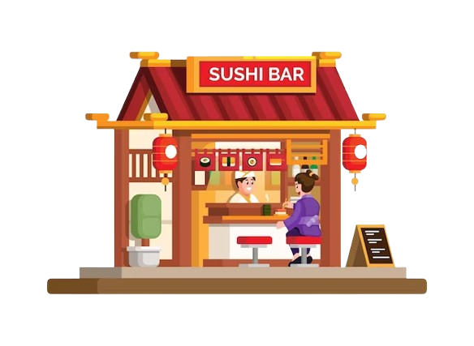
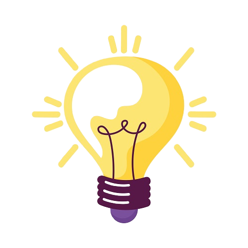
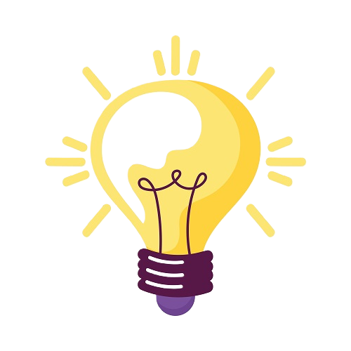

Silakan kamu buka paper bag dan cari ada hadiahnya yang kecil! Tebak hayo apa itu? 🎁

Kamu telah melakukan teleportasi ke toko sushi di Jepang dan diajak oleh Bento untuk ikut masuk ke dalam. Apakah kamu ikut masuk ke dalam toko sushi?
Silakan kamu buka pesenan hadiah spesial dari Bento yang ada di paper bag...
Hayo tebak apa isi hadiahnyaaaa? Ketebak kah? Atau tidak tahu samsek? Dasaaar cupu!!! 🍰🧸🎀
🔄
Halo Bebi Kecil! 🎉
Ini adalah pesan spesial yang kamu harus baca karena kamu udah nyelesain cerita interaksi singkat dari aku! Sebelumnya, aku minta maaf ya Bebi, karena hadiah ultahnya telat dan projek ini telat selesai juga. Aku nyesel dan berusaha buat selesain semuanya sampai akhirnya selesai. Cerita interaksi singkat sebagai pengantar kado aku yang sekiranya buat Bebi excited. Semoga kamu sukak!
Bebi, selamat ulang tahun ya. Aku berharap semoga kamu bisa menjadi besar dan jadi orang yang bisa membawa pengaruh positif ke sekitarnya. Aku mau kamu bisa jadi lebih baik dan semakin dewasa, semakin pintar biar kayak Bebek Bento. Walaupun di hari ulang tahun kamu banyak peristiwa yang tidak mengenakan buat sebagian rakyat Indonesia, termasuk Bebi, turut buat aku sedih karena banyak yang dirugikan dari peristiwa ini. Apalagi puncaknya tepat di minggu-minggu hari ulang tahun kamu. Kamu pasti merasa sedih dan kesel kenapa tahun ini jadi begini.
Tapi percayalah Bebi, dibalik ini semua ada good things yang menanti orang-orang, khususnya kamu. Mungkin sekarang kamu lagi ada di perasaan yang kecewa dan benci akan ulang tahun di tahun ini. Aku juga gak luput dari kebingungan harus bagaimana bisa menghibur kamu, selain peduli dan nasehatin kamu untuk bersabar. Kecil dari waktu aku diusahakan untuk membuat pengantar hadiah kecil yang sekiranya Bebi suka. Aku buat ini khusus untuk Si Kucul, jadi tidak ada pihak lain yang terlibat selain kita. Anggaplah ulang tahun kamu tahun ini masih dikasih pemberian, dan sekarang kamu lagi masih mengalami pemberian tersebut. Semoga hari-hari kamu bisa jadi lebih ceria lagi ya! 🎂🎈💖

 
